De Casteljau Step 1
De Casteljau Step 1 De Casteljau Step 3
De Casteljau Step 3 Final Bézier Curve
Final Bézier CurveIn this project, we developed a fast, modular 3D rendering system capable of rendering and editing meshes defined either by bezier surfaces or a collection of triangles. To do this, we implemented bezier curve/surface rendering through de Casteljau subdvision, area weighed vertex normals in order provide smoother surface shading, as well as certain mesh editing features like edge flipping and splitting in order to support mesh upsampling through 4-1 loop subdivision. Additionally, we decided to take a number of these features further than required and added support for boundary edge splitting in order to support truly correct loop subdivision behavior on non-closed meshes.
Although this project primarily focused on bezier curves and mesh modification, we learned a lot about a number of disciplines surrounding these topics in the process. Firstly, we learned (and had a lot of fun doing it!) how to use Blender to create models. While our art skills are nothing to write home about, it is very gratifying to see a model we handcrafted (or, computer-crafted!) rendering and upscaling in our program. Secondly, we--rather unfortunately--learned a lot of new techniques to debug highly complex algorithms ranging from render bisection, to judicious application of asserts, LLVM's Address Sanitizer, Xcode's Memory Graph, and so much more in order to help us more quickly root cause bugs and isolate them for analysis. While learning these techniques was significantly less enjoyable than modeling in Blender, it still provides us practical, valuable skills as engineers.
De Casteljau's algorithm is a recursive process that finds points on a Bézier curve parameterized by variable t that ranges from 0 to 1. Each Bézier curve is defined by a set of n control points that are provided as input into the function. Each de Casteljau subdivision step takes those n points and generates n-1 points which will be the input for the next subdivision step. This process will be repeated until we are left with only one point that will lie on the curve. For this part of the project, we implemented a function that evaluates a single step, given the control points from the previous step and the t parameter. In each step, we iterate through the provided control points (indexed by i), and the new point is given by lerp(points[i], points[i+1], t), which is a linear interpolation function between the two points. We calculate n-1 lerp()s and we get the set of control points for the next iteration.
| 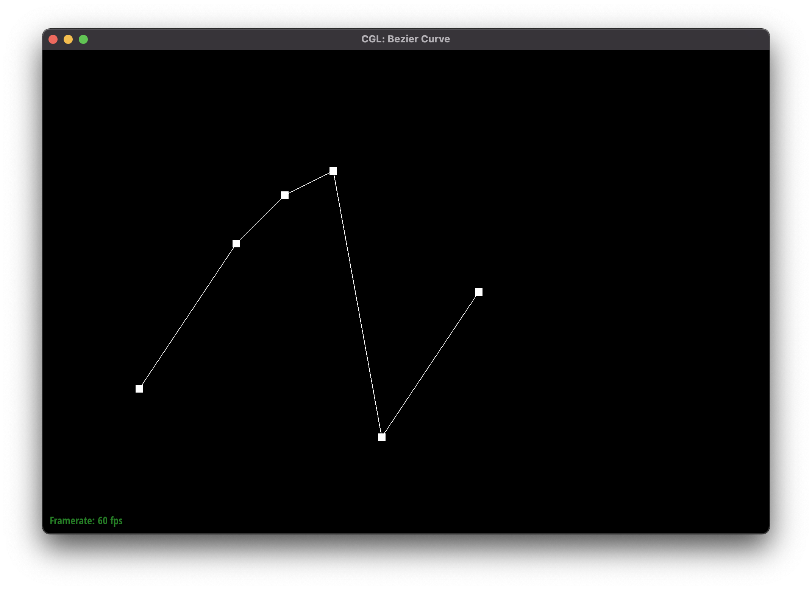Bézier Control Points | De Casteljau Step 1 |
| 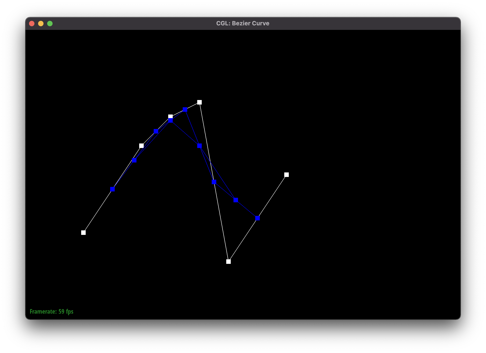De Casteljau Step 2 | De Casteljau Step 3 |
| 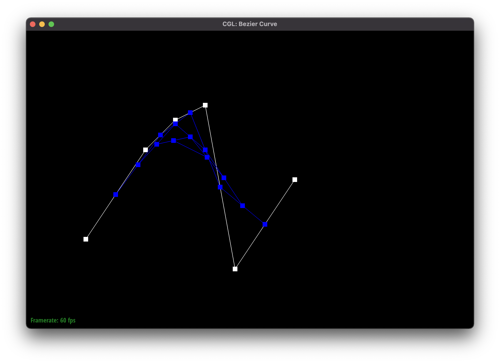De Casteljau Step 4 | 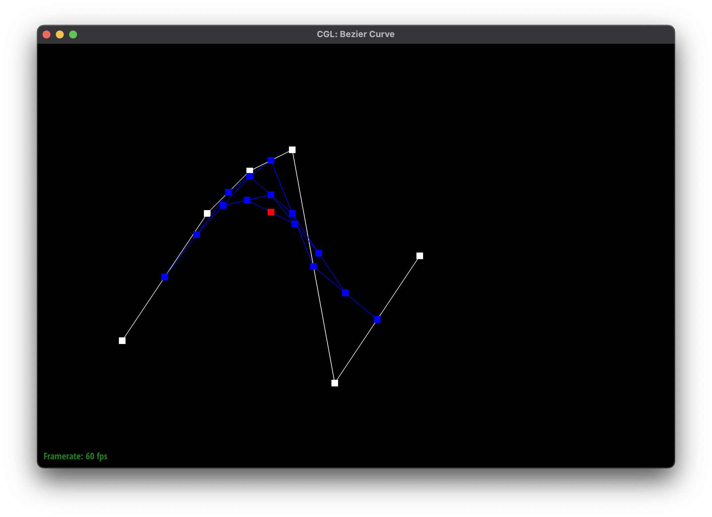De Casteljau Step 5 with Final Point on Curve |
| Final Bézier Curve |
 Bézier Curve with Low Bézier Curve with Low t Value |
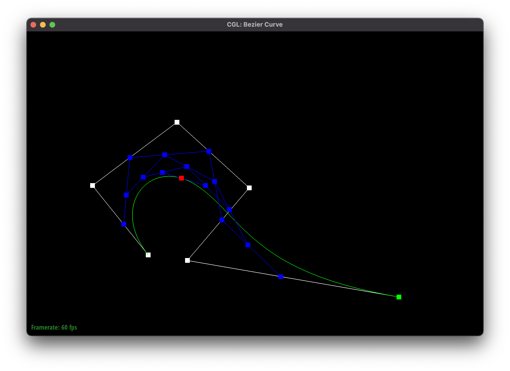Bézier Curve with Middle t Value |
 Bézier Curve with High Bézier Curve with High t Value |
These images came from modifying the t parameter.
Bézier surfaces require performing de Casteljau's algorithm multiple times to define a surface. In this project, we were given a grid of of control points (as opposed to the 1D array in part 1 to define a curve). We are also give parameters u and v that correspond to the t parameter in part 1. In order to get a point on the Bézier surface using the (u, v) parameters, we first defined a function very similar to the one implemented in part 1 to evaluate one step of de Casteljau's algorithm given a 1D array of 3-dimensional points. Then, we wrote a function, that given a 1D array of control points and a parameter t, would fully iterate through all the steps and provide a point on the Bézier curve for those row of points. To get the final evaluation in 3D, we went row-by-row with the control points and evaluated points on the curve defined by the row of points and the parameter t=u. Now, we have a set of control points (one per row) corresponding to a curve on the final surface that runs parallel to the v-axis at a value u. To get the point on the surface, we now use these control points and parameter t=v with the same helper function. This will give us a point on this curve that will belong on the surface. We can vary u and v from 0 to 1 each and evaluate different points which when put together would define the surface.
This allows us to smoothly render bezier surface based models such as teapot.bez:

To implement the area-weighted vertex normals, we first needed to find all the faces adjacent to the given vertex calculate a normal vector (scaled by the area of the face) to each of those faces. We would then have to sum all those vectors up and divide by the sum of the areas. To implement this, however, we used the property of cross-products that u x v provides a vector perpendicular to u and v, and its norm would be the area of the parallelogram created by u and v (which is equal to 2 times the area of the triangle). If we leave cross-product as is and used the norm of the cross-products for the denominator, this factor of 2 cancels out in both the numerator and denominator. Next, we just need two edges from every adjacent face, keeping both a running sum of their cross-products and a sum of the norms of their cross-products. At the end we can return the sum of the cross-products divided by the sum of the norms of the cross-products. To iterate around the faces and get the edges, we got the vertices' halfedge, got the start and end location of the halfedge using halfedge->vertex()->position and halfedge->twin()->vertex()->position to define the first vector and did the same with halfedge->next() to get the second vector for the face. We would take the cross-product of these two vectors and the norm of the product. To iterate to the next face, we did halfedge = halfedge->twin()->next() which would correspond to the next halfedge coming out of the given vertex. We would repeat until we had fully looped around.
dae/teapot.dae| Default Flat Shading | Phong Shading |
|---|---|
 |
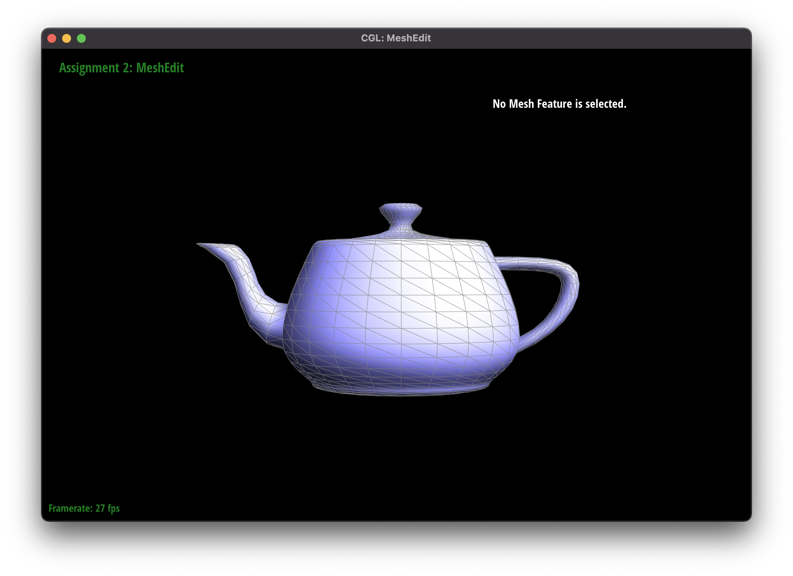 |
To support the edge flip operation, we began by diagramming the flip operation:

We took care to ensure that the external geometry (edges numbered 2, 3, 4, and 5 as well as all vertices) were still external in the same locations in order to preserve mesh geometry/avoid needing to reflow the entire mesh. This was also useful because it meant that we did not need to worry about the order in which we applied the transformations as all external edges continued to hold the same twin, and thus no temporaries/careful tracking of modified data were required.
With this structured translation in tow, we were able to simply capture a reference to all relevant geometry by traversing the mesh and then directly apply our changes, with the slight caveat that we silently refuse to flip boundary edges as there is no sensible way to fulfill such a request.
| No flipped edges | Four flipped edges |
|---|---|
 |
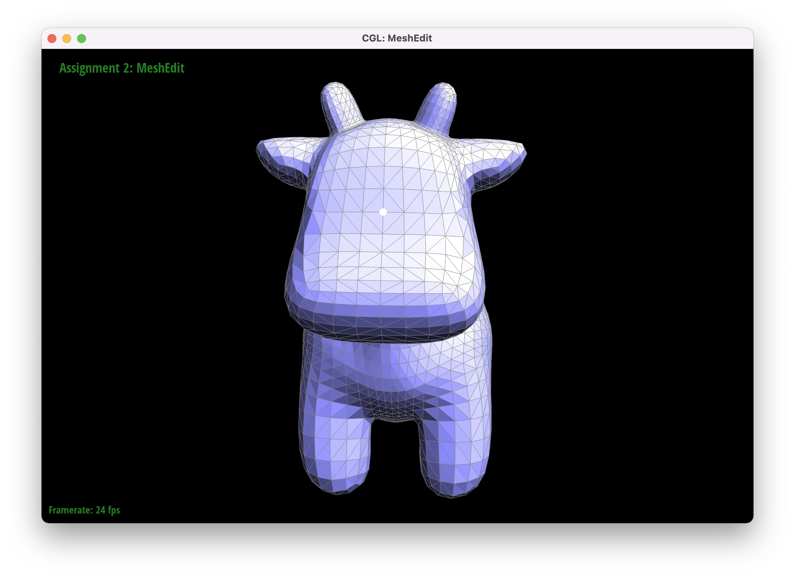 |
These changes allowed us to flip any individual, non-boundary edge in the mesh. Above we provide an example of flipping the four edges near the highlighted vertex on the cow's forehead so that instead of converging at the vertex they all diverge. This was done by selecting each edge and then pressing the F key to flip each edge.
To implement the split operation, we followed a similar approach as we took when build flip and began by diagramming the operation:

Again, we took special care to ensure that edges 1, 2, 3, and 4 as well as vertices 0, 1, 2, and 3 continued to be external so as not to have a cascading effect on the rest of the mesh. This strategy, once again, allowed us to avoid concerns of overwriting critical state since no geometric feature needed to access the previous state information (ex. the old twin of a halfedge) for any geometric feature except for itself. We then were able to simply capture references to all old geometric features by traversing the mesh, creating the new required geometry, and then performing the transformation as illustrated above.
Simple, right? Well, yes and no: although our approach was correct, implementing it quickly became a small nightmare and tossed us headlong into an enormously painful debugging session. Even though both members of our lab team independently implemented their own variant of this function, neither was initially fully correct and each had a handful of subtle issues which only reared their head when executing part 6's loop subdivision algorithm. Finding all of these issues--ranging from small transcription errors while converting from the diagram to code all the way to more severe issues like incorrect traversals while capturing references for source geometry and outright memory corruption--required a number of techniques.
One of the most powerful debugging tools we leaned on was perhaps the most simple: assert! By sprinkling asserts all throughout our code base, we were able to ensure that our assumptions about both the input geometry and the changes we applied were consistent. By installing these checks in key places (such as Halfedge::setNeighbors), we were able to immediately halt the program when invalid changes are requested (such as setting a halfedge's next to its own twin, which is never valid) rather than allowing bogus geometry to propagate throughout the program and cause untold and much harder to diagnose damage to other subsystems. These helped catch a slew of issues and provide a very narrow search area (in many cases narrowing it down to a single line of code!) which sped up debugging considerably. This is largely a defensive programming technique and is certainly one we intend to carry forward both to other CS 184 assignments and other projects out in the world.
Asserts, however, can only get you so far--after all, sometimes your assumption was simply wrong and other times the assertion failure was caused not by invalid assumptions/transformations made in the function but rather because the input geometry was broken in uncaught ways due to an earlier, buggy transformation. To resolve issues where we caught bugs after they occurred, we had to lean on tools like LLDB and Apple's memgraph tools to perform a post-mortem analysis. While the use of LLDB here is not entirely novel, applying memgraphs is somewhat more interesting.
In short, Apple's memgraphs allow a debugger to continuously capture information about a program's heap state and the pointer references it contains as it executes. These graphs can be visualized in Xcode to show both the full reference hierarchy and the back trace that caused a certain piece of memory to be allocated and, later, freed:
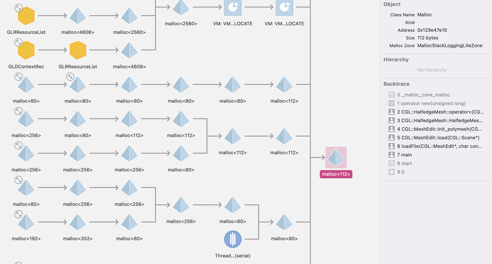
Memgraphs were incredibly useful for debugging this project because it allowed us to see the relationships and pointers between various objects in our runtime. Such insight was indispensable to us because it made it possible to simply scan over mesh geometry objects to validate that we were wiring up whole groups of objects correctly without needing to juggle piles of pointers and variables across various stack frames and breakpoints in LLDB. More powerfully, memgraphs can be diffed using commandline tools like Apple's heap which allow us to view only the reference changes made between two discrete points (such as before a split and after a split) to zero in on the specific impact of any given operation.
Eventually, however, we were able to successfully implement edge splitting:
| Before split #1 | After split #1 |
|---|---|
| 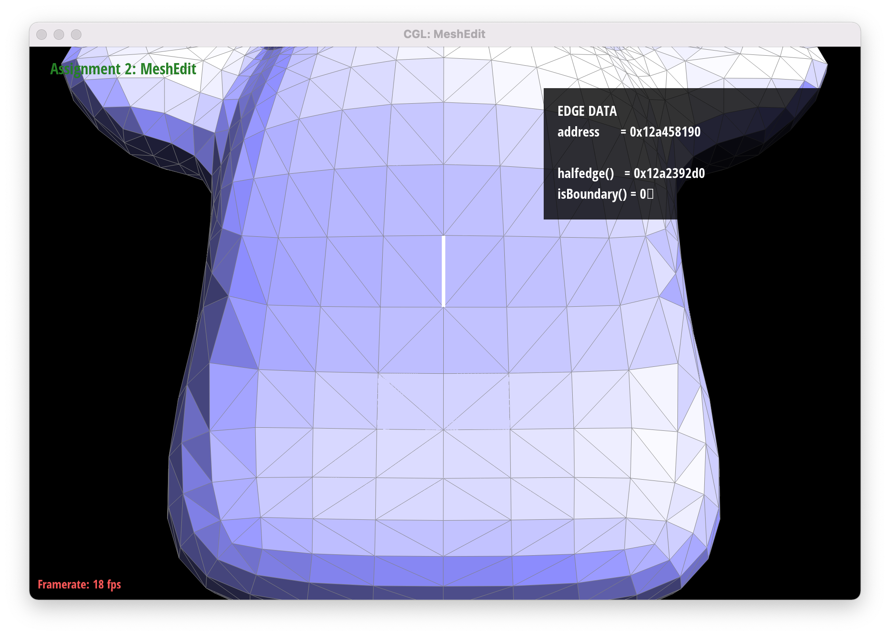 |  |
| Before flip #1 | After flip #1 |
|---|---|
 |
| Before flip #2 | After flip #2 |
|---|---|
 |
 |
| Before split #2 | After split #2 |
|---|---|
 |
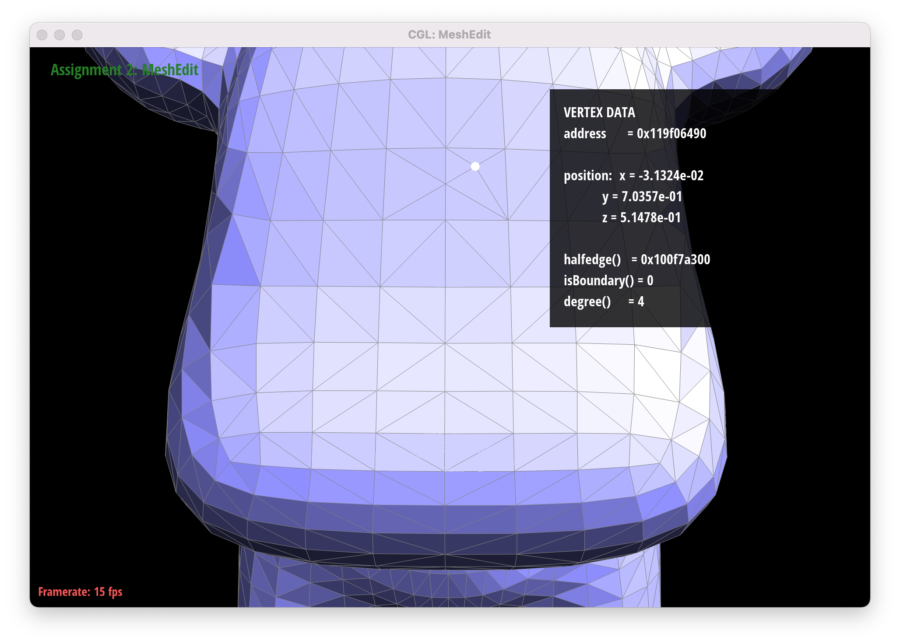 |
Finally, we demonstrate our implementation of the extra credit "boundary edge" splitting:
| Before boundary split #1 | After boundary split #1 |
|---|---|
 |
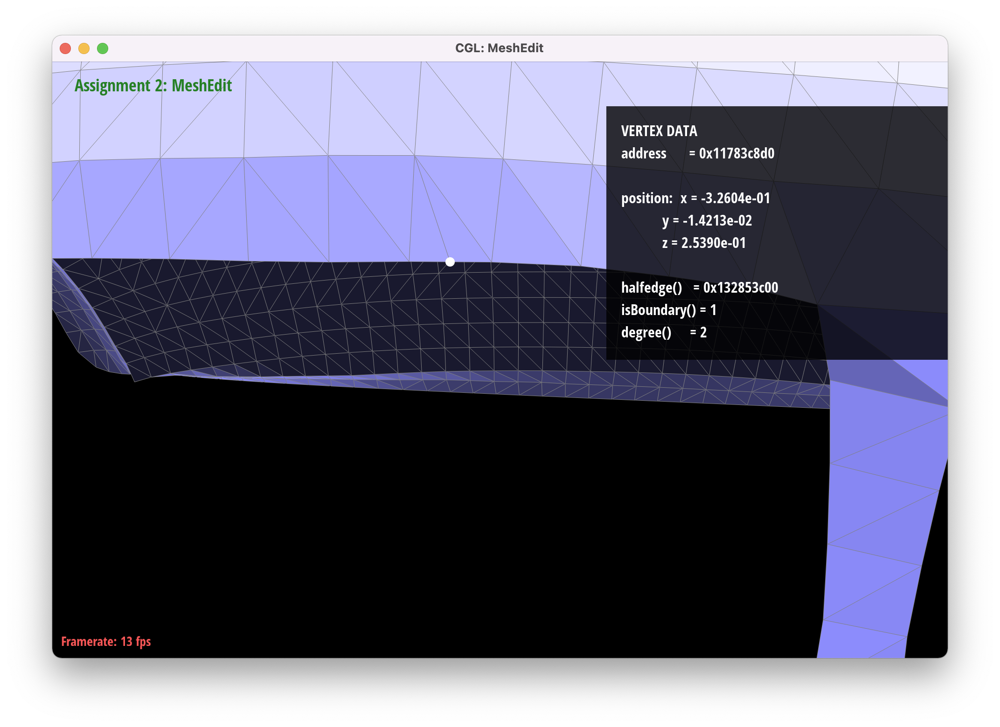 |
Our implementation of upsampling via 4-1 loop subdivision largely leaned on our previous work on both the edge split and flip operations.
To support this, however, we had to make some small changes to our splitEdge implementation. Namely, we needed to add a few extra lines to properly set the isNew ivar on all newly created geometry. With this change, we were then able to implement upsample by first computing the new position for both all existing vertices by stashing (without applying!) them in the newPosition ivar as well as for all soon to be created vertices (namely those created by later invocations to splitEdge) in their respective edges' newPosition ivar. We then sweep through the entire geometry and mark all old vertices and edges as old by setting their isNew ivar to false. Next, we traversed the mesh's edges, splitting all edges that were old in order through the splitEdge function to perform the "division" part of the subdvision. Notably, we perform this traversal in reverse order to slightly improve performance since we know that new edges are inserted at the head of the list and so we can avoid having to step over them simply by starting at the end. After this, we fixed up the mesh by flipping any edge which connected both an old vertex and a new vertex by invoking flipEdge on them. With the division performed and all edges corrected, we were then able to simply activate the new vertex positions by traversing the vertex list and moving the newPosition into the vertex's position ivar, and thereby completed the subdivision.
Additionally, we chose to support subdivision against boundary edges. Due to our pre-existing support in splitEdge for splitting boundary edges, this only required a slight modification to the constants used in the weighted neighbor position sum and some minor filtering.
With this subdivision algorithm in tow, we are now prepared to analyze its effect. To begin, we analyze the general impact of 4-1 loop subdivision against the beetle.dae mesh.
| Treatment | Image |
|---|---|
| Baseline |  |
| 1 round (no boundary edge support) |
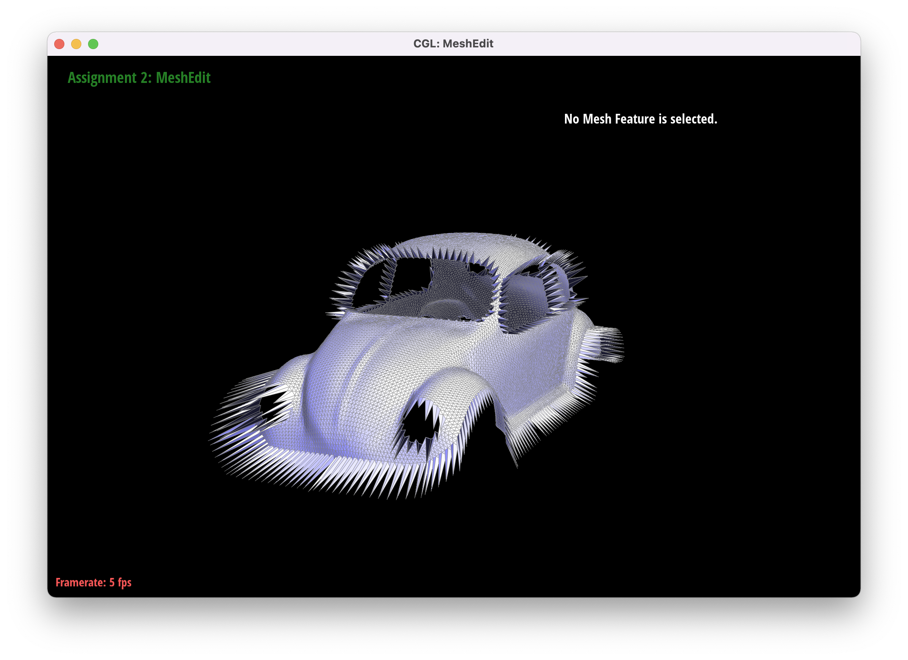 |
| 1 round | 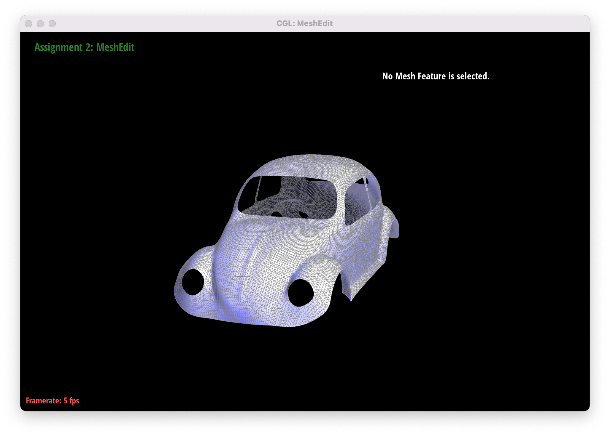 |
Here we can observe that with even one round of subdivision, we see considerable smoothing on surfaces such as in the crease between the bonnet and the headlight which, in the untreated mesh, is rather sharp and has a very different surface normals from its neighboring vertices. After just one round of subdivision, we can see both that the edge is less sharp and, thus, that the surface normals more smoothly transition. Additionally, we can rather easily observe the correctness of our boundary edge support by noting the different between 1 round with our additions and without and noting the very obvious lack of spikes in the correct implementation.
When turning off the wireframe and inspecting the model from another angle, the effect is even more pronounced:
| Treatment | Image |
|---|---|
| Baseline |  |
| 2 rounds |  |
We can see that the previously bumpy side panels and wheel wells are converted to smoothly changing surfaces, which leads to a much better appearance of the model.
Loop subdivision, however, does have certain disadvantages. In the diagram below, consider the "unprocessed cube", which is merely the raw cube.dae model, as it undergoes multiple rounds of subdivision:
| Treatment | Unprocessed Cube | Processed Cube |
|---|---|---|
| Baseline |  |
 |
| 1 round | 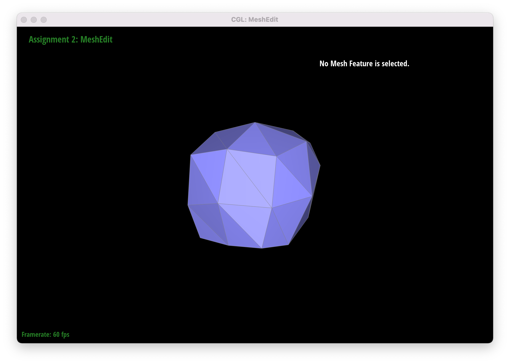 | 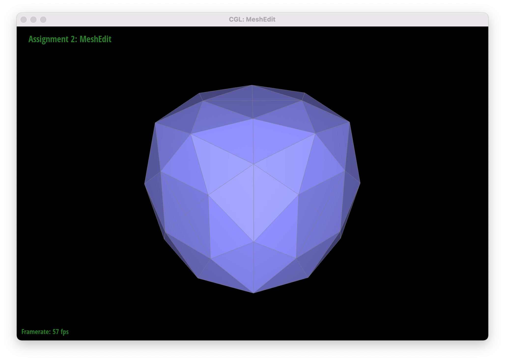 |
| 2 rounds |  |
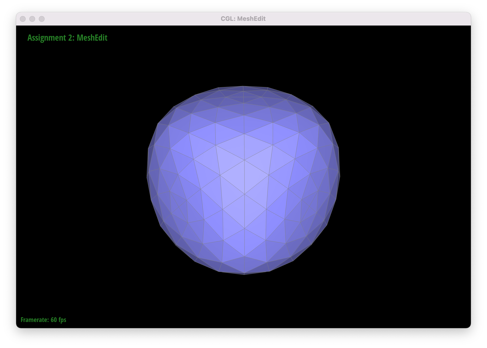 |
| 3 rounds |  |
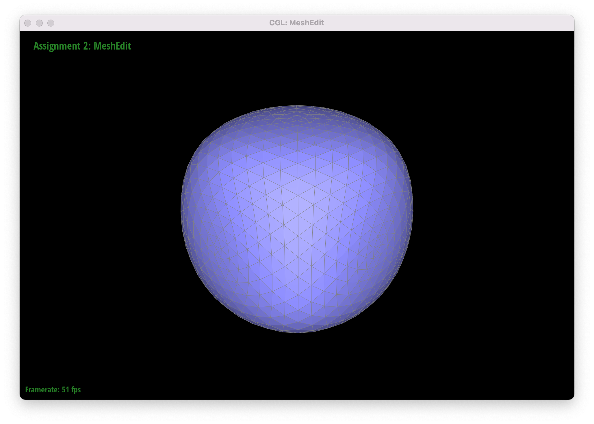 |
| 3 rounds (front view) | 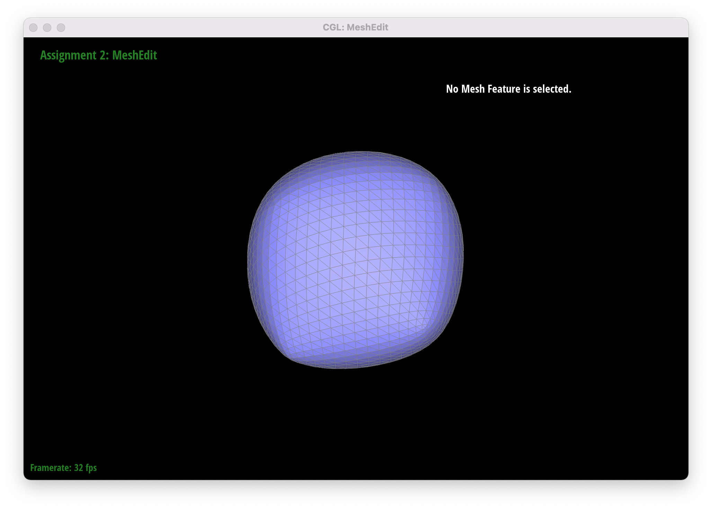 | 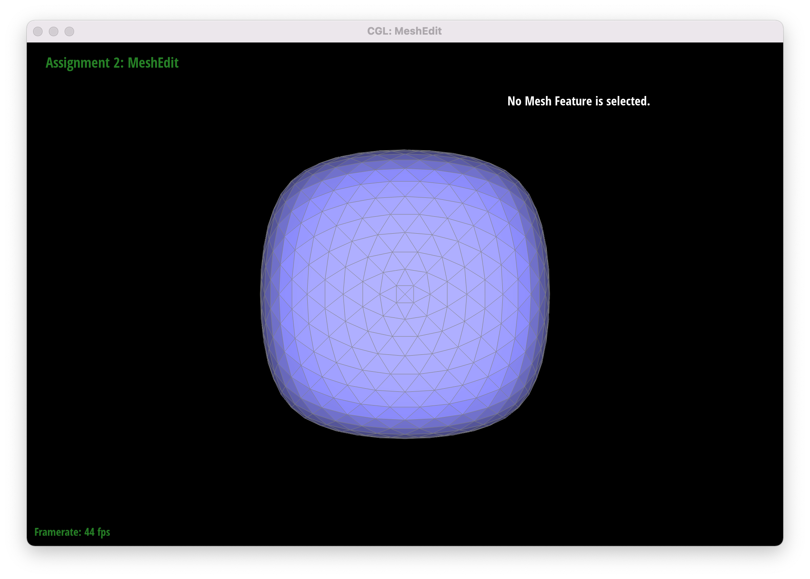 |
Here we can see that the unprocessed cube, while becoming softer as expected, seems to lose its cube-y nature and instead transforms into an asymmetrical/somewhat lumpy lemon shape. This behavior, however, is expected when considering the starting geometry of the cube and the loop subdivision algorithm.
This asymmetrical smoothing happens as a result of both the placement and number of extraordinary points as these points drive the smoothing. In the unmodified mesh, the extraordinary points land on the edge-corner intersections of the cube. Due to the self-propagating nature of extraordinary points (the same pattern of geometry recurs merely at a smaller scale upon), the areas surrounding an extraordinary point are never effected by smoothing no matter how many rounds are applied.
Knowing this, we can leverage extraordinary points to retain our cube-y appearance by moving the extraordinary points to the center of each face, thereby always keeping the sides of the cube flat and smoothing everything between the sides. We can cause an extraordinary point on the center of each side by splitting the edge crossing each side of the cube once (see: baseline for "processed cube") to construct what looks like a square with an X in it. We can observe that this geometric structure will never deteriorate because subdividing each triangle in this layout simply yields another slightly square with an X in it. Since the vertex at the center of this X always exists and it always only has four edges incident to it, this vertex is an extraordinary point as desired. Thus, by placing an extraordinary point on each side we are successfully able to prevent the cube from losing it's cube-y-ness.